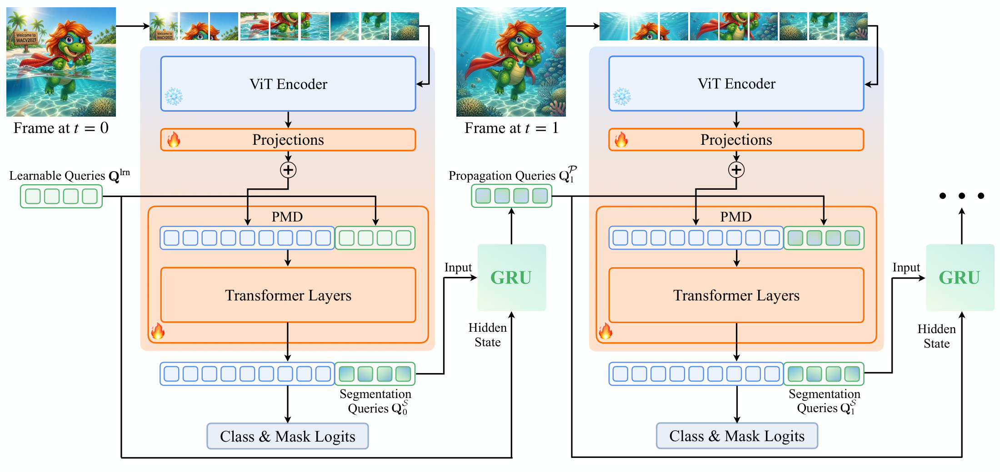
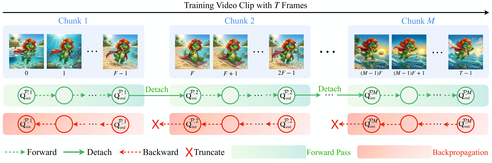

We introduce the Long-term Video Mask Transformer (LVMT), an online video segmentation model built on a frozen plain Vision Transformer (ViT). A single lightweight mask decoder handles both segmentation and temporal association, without relying on dedicated tracking modules or heavy task-specific heads.
LVMT propagates information over time with Truncated Query Propagation (TQP): a GRU updates each object query independently, so every query carries its own memory across frames, and training splits long clips into chunks that keep gradients bounded while the propagated state still spans the whole clip. This lets the memory be trained on videos long enough for objects to be occluded and re-appear, which is where per-frame baselines lose track.

Each frame is encoded by the frozen ViT and its patch tokens pass through trainable projections into the mask decoder, where they are processed jointly with a set of queries to produce the segmentation queries QSt and the frame's class and mask logits. TQP feeds those queries to a per-slot GRU, with the previous step's queries as hidden state, giving the propagation queries QPt+1 used on the next frame. At t = 0 the hidden state is the learnable query set Qlrn. Only the projections, the decoder and the GRU are trained.

Backpropagating through a whole clip raises two problems at once: memory grows with the clip length, and the gradient reaching the earliest frames vanishes after being chained through every intermediate step. Both cap how much temporal context the query memory can actually be trained on. TQP addresses both, splitting a training clip of T frames into M chunks of F frames and treats the two passes differently: in the forward pass the state at the end of a chunk is detached and becomes the next chunk's initial state, so the model still sees the full clip, while in the backward pass gradients are truncated at every chunk boundary. Activation memory therefore scales with F rather than T, and every chunk receives a gradient that has travelled at most F steps instead of decaying across the whole clip — so clips can be made long enough for the memory to face real occlusions and re-appearances.
@article{Norouzi2026LVMT,
author = {Norouzi, Narges and Cavagnero, Niccol\`{o} and Zulfikar, Idil and Leibe, Bastian and Dubbelman, Gijs and {de Geus}, Daan},
title = {{LVMT: Video Mask Transformer for Long-term Video Segmentation}},
journal = {arxiv},
year = {2026},
}